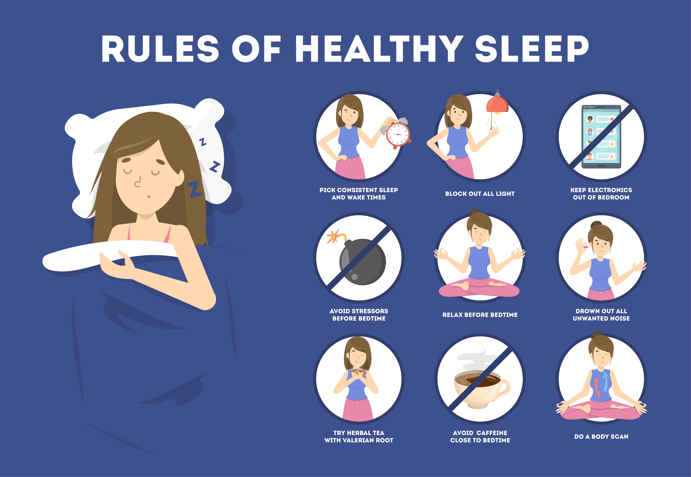
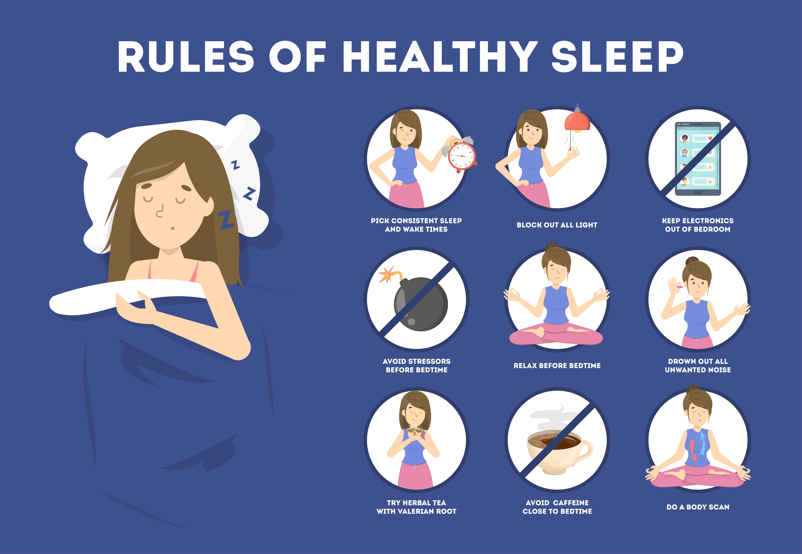

How well are you sleeping?
Sleep is one of the key elements in exercise recovery and is crucial to physical and mental wellbeing. Good quality sleep is often overlooked in favour of how many hours you can cram into your busy lifestyle.
Sleep Better, Live Better.
Sleep is one of the key elements in exercise recovery and is crucial to physical and mental wellbeing. Good quality sleep is often overlooked in favour of how many hours you can cram into your busy lifestyle.
Not just any ordinary sleep tracker, Sweet Dreams takes sleep tracking to the next level by giving you rich insights into your sleep, moods and their possible external influences. Live your best life by visualizing and pinpointing the triggers and influences for your moods. Share your raw data and insights with your doctor, friends, or family members.

Track your daily highs and lows, sleep, medications, and other symptoms related to Bipolar/Manic Depressive illness.

A detailed calendar allows you to visualize your patterns over time to get a birds-eye view into your mood disorder.

Configurable graphs let you plot tracking points against each other to better visualize what symptoms or outside influences may be triggers for you.

Email a monthly report to your doctor or therapist, or share your data and online charts with a friend or family member.

Track your medications taken and break them down by time of day, daily, or as-needed. Get medication reminders and quickly visualize when you missed a dose.

eMoods Insights is fully integrated with your local weather and mood phases so that you can visualize how these outside influences affect your moods and other symptoms.